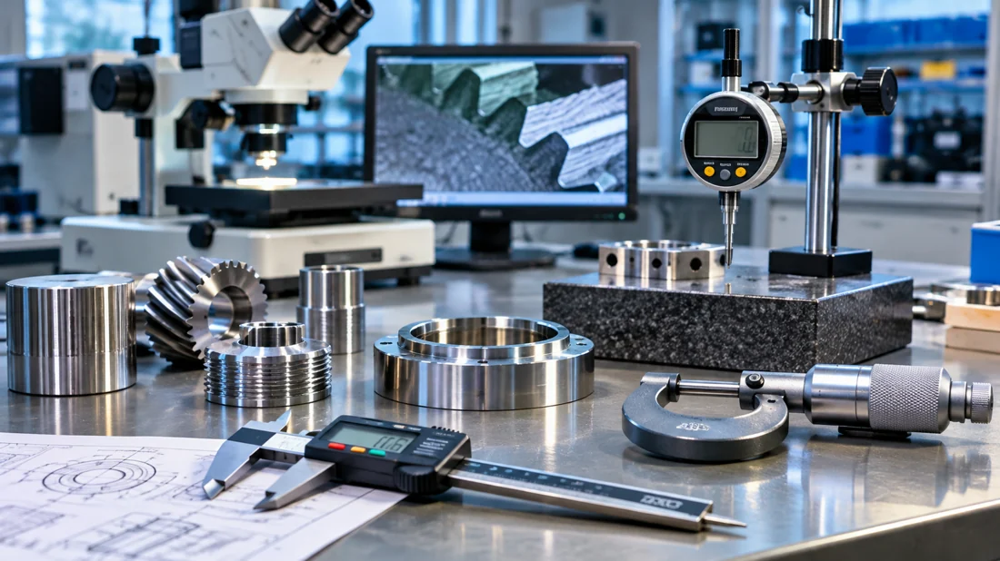
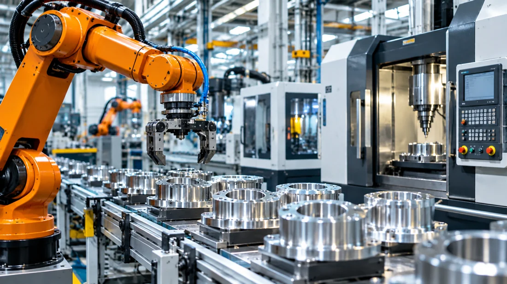
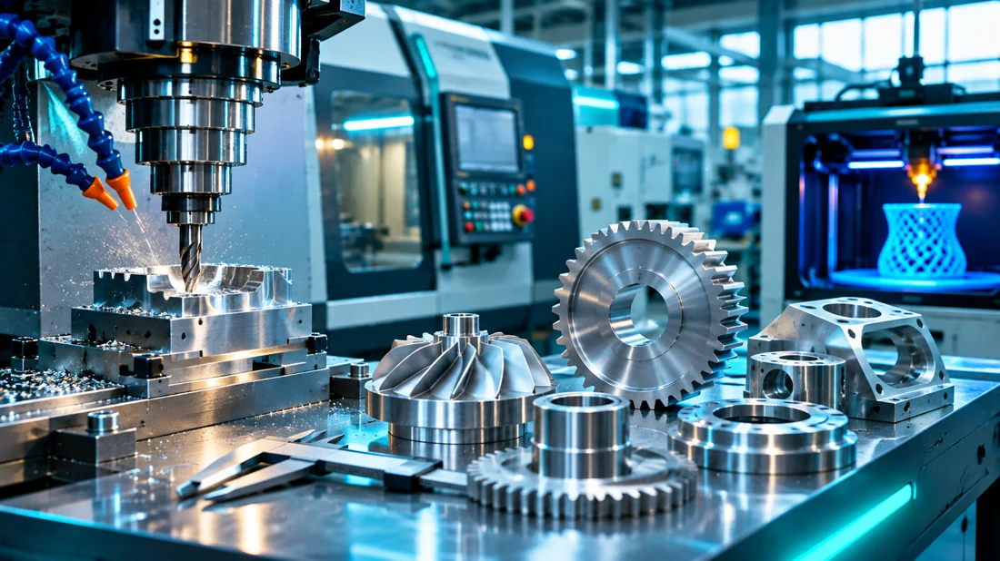
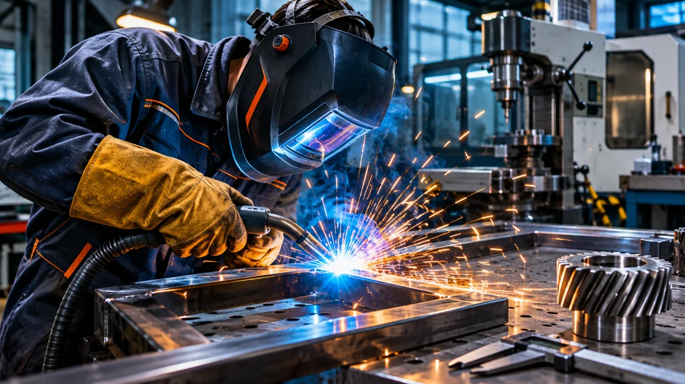
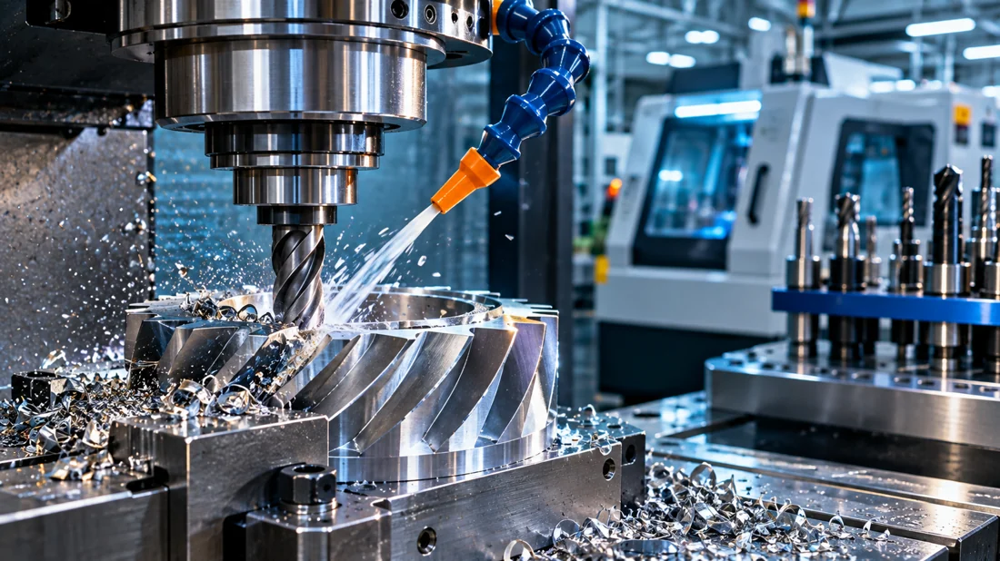
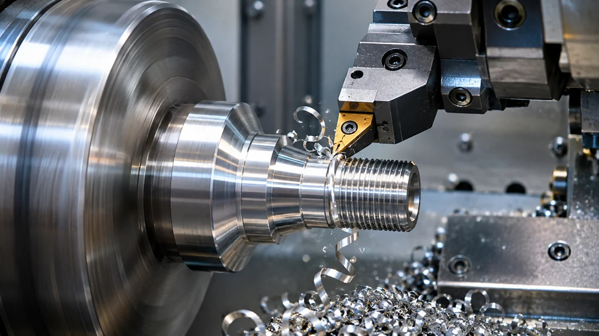
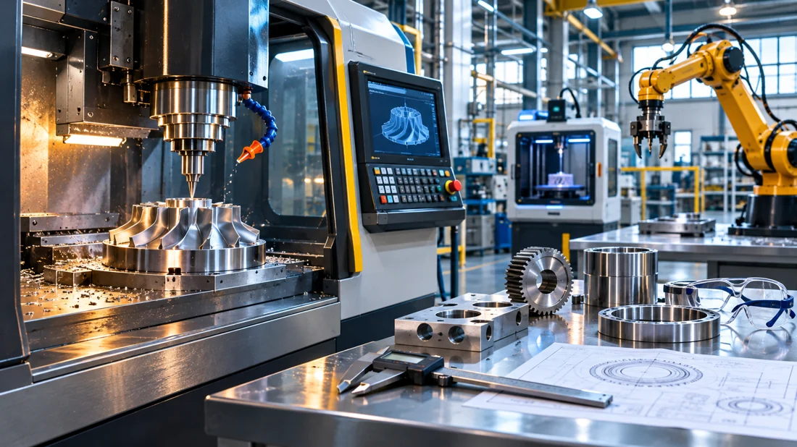

ДОСЛІДНИЦЬКИЙ КУРС · КМАН
Технології виробництва
Досліджуйте матеріали, 3D-друк, промислові процеси та інженерні рішення. Формулюйте гіпотези, змінюйте параметри, порівнюйте результати й створюйте власне дослідження.
Почати дослідження Моє дослідження МАН12
розділів
розділів
24
програмні теми
програмні теми

Розділи курсу

РОЗДІЛ 01
Основи наукового дослідження
3 заняття · дослідження та практика
Відкрити розділ →
РОЗДІЛ 02
Світ сучасних виробничих технологій
1 заняття · дослідження та практика
Відкрити розділ →РОЗДІЛ 03
3D-моделювання та адитивні технології
1 заняття · дослідження та практика
Відкрити розділ →РОЗДІЛ 04
Технічна творчість та інженерні рішення
1 заняття · дослідження та практика
Відкрити розділ →
РОЗДІЛ 05
Експериментальні дослідження
3 заняття · дослідження та практика
Відкрити розділ →РОЗДІЛ 06
Матеріалознавство та термічна обробка
3 заняття · дослідження та практика
Відкрити розділ →
РОЗДІЛ 07
Дослідження структури матеріалів
2 заняття · дослідження та практика
Відкрити розділ →
РОЗДІЛ 08
Композити та порошкова металургія
2 заняття · дослідження та практика
Відкрити розділ →
РОЗДІЛ 09
Покриття та зміцнення поверхонь
2 заняття · дослідження та практика
Відкрити розділ →
РОЗДІЛ 10
Лазерні та високоенергетичні технології
2 заняття · дослідження та практика
Відкрити розділ →
РОЗДІЛ 11
Обробка матеріалів тиском
2 заняття · дослідження та практика
Відкрити розділ →
РОЗДІЛ 12
Власне дослідження та конкурс-захист
2 заняття · дослідження та практика
Відкрити розділ →